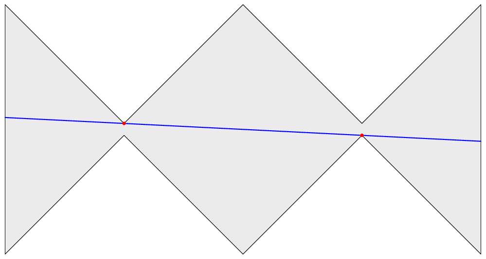

ACM ICPC World Finals 2017
Shortest judge solution: 1460 bytes. Shortest team solution (during contest): 2365 bytes.
Python solutions by the judges: only Pypy
The initial thought is the standard in geometry – there has to exist an optimal landing strip that passes through two vertices of the polygon. The proof is also relatively standard: you can elongate any landing strip until both ends hit the edge of the polygon and, keeping one end fixed, rotate the landing strip – it will increase length in one of the directions of rotation – until either reaching the end of the edge, or until blocked by a different vertex of the polygon. Notice that the longest edge doesn’t necessarily have to be a diagonal, in fact, it can happen that both of the ends of the longest landing strip are in middles of polygon edges, as in the figure below.

Given the n ≤ 200 limit, a cubic algorithm will run in time – so, the plan is to try all pairs of points A, B, and for each pair figure out first whether the interval AB is wholly contained in the polygon, and if so, find out how much can it be extended. In principle, this is easy – for the first question, find out whether the polygon boundary crosses AB, and find out the first place the polygon boundary crosses the half-lines extending AB in either direction.
In practice, the most difficult part is correctly classifying the cases where the polygon boundary touches the line AB, possibly runs along the line for some time, and then veers away – either back to the same side it came from (in which case it didn’t cross the line), or to the other side (in which case it did cross the line). This requires some care to get right (although is made a bit easier by the fact the problem statement disallows subsequent collinear edges).